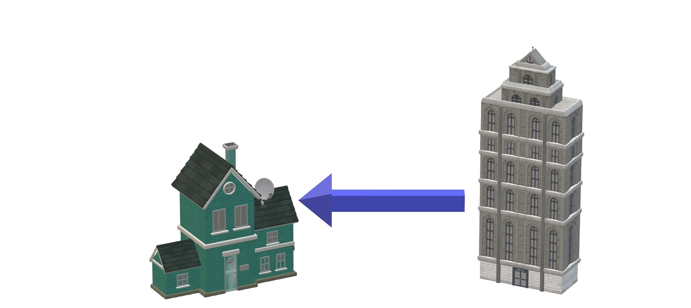
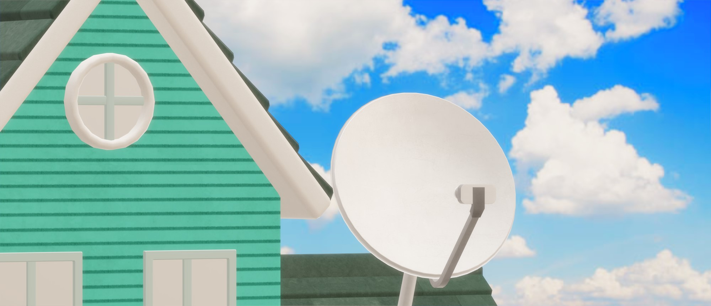

MAN's full form is Metropolitan Area Network. it is a computer network that interconnects users with computer data / resources in a large area like a city / metropolis. This type of network covers a larger area than LAN and has a range of 5 to 50 kilometres
This type of network resides in the same or different cities. It mostly serves as an ISP (Internet Service Provider). This type of computer network is designed for customers who need a high speed connectivity. Speed of MAN is in MBPS(Mega Bytes Per Second), making it faster. The network coverage in this type of network depends on the configuration.
It Is Less Expensive
It is less expensive to attach MAN as compared with WAN (Wide Area Network); see WAN.
High Speed
MAN network uses high fibre optic cables, which helps in transferring or recieving data from one device to another at a very fast rate.
Internet Sharing
If we use MAN, we can share internet connections with other people / users. By this way, since the spped of MAN is high, MAN users get very high speed even if they are working in the same shared network.
Wire Requirement
Comparing to LAN and WAN, MAN requires additional wires for operations. This is due to connections of any teo LAN networks. When there is more need of wires, then the overall installation cost will increase.
Dependency On Fiber Optic Cables
Fiber Optic cables are the only element in MAN, which make it popular for its high speed. If MAN is installed without these cables, then users will experience internet speed problems. This akes it a huge problem as fibre optic cables increase the cost of installation.
The most common example of MAN is Cable TV Network. This is found almost in every home. The TV Cable Dish recieves TV signals via MAN from which we are able to see Cable TV. These signals come from one place and MAN helps them to send these signals throughout the city.

Copyright © 2020 Network, All rights reserved
Research From:
Wikipedia.org
Orbit-computers-solutions.com
Computernetworktopology.com
rfwireless-world.com
purple.ai
comptia.org
hitechwizz.com
nibusinessinfo.co.uk
searchmobilecomputing.techtarget.com